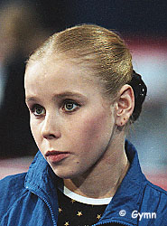

Anna Kovalyova (RUS)
1998 Jr. European AA Champion
 |
|
World Championships: 1 Silver |
Anna was born on January 18, 1983, in Novgorod, Russia. She was coached by Elena Mashinskaya and Leonid Arkaev. Anna's half-brother, Dmitry Lvov, is also a gymnast and competed at the 1998 European Championships in St. Petersburg.
Competition Results
1996
Jr. European Championships: 4th V
1997
Cottbus International: 3rd B, 4th UB, 5th V, 8th FX
European Youth Olympic Days: 1st AA
GBR-RUS Dual Meet: 1st Team, 4th AA
Glasgow Grand Prix: 2nd V, 4th B
World Stars: 1st V, 1st FX, 4th B
1998
American Cup: 6th AA
Copa Gimnastica: 6th AA, 3rd B, 6th FX, 8th UB
French International: 5th AA
Goodwill Games: 6th V, 8th FX
Jr. European Championships: 1st AA, 1st V, 3rd UB, 3rd FX
RUS Championships: 1st AA, 1st B, 3rd V, 4th FX
RUS Cup: 4th AA, 1st V, 1st B, 4th UB, 4th FX
World Stars: 1st AA, 1st V, 1st B, 1st FX, 2nd UB
World Youth Games: 2nd AA
1999
Cottbus International: 1st FX
RUS Championships: 8th AA, 1st FX, 2nd V, 5th UB, 5th B
RUS Cup: 3rd AA, 4th UB, 6th B
Samboo International: 4th B
World Championships (Tianjin): 2nd Team, 6th B
2000
RUS Championships: 3rd Team, 12th AA, 2nd B, 4th V
RUS Cup: 8th AA
This page was created on January 27, 2000
and was last updated on January 03, 2007.
© Gymn Forum